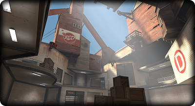

What is Grub Fortress.
Grub Fortress is a Team Fortress 2 Sourcemod mainly developed by Grub PL, Without a real goal behind itbesides being a fun mod. by adding new weapons, new maps, visual changes, and trying to rebalance
currrent weapons.
Latest Post
|  | TF:Grub Progress Update 3 Feb 8th, 2026 |
Links
Grub Fortress not affiliated with Valve Software or any of their other franchises,
Grub Fortress is an Community made project made by a few people
All original Team Fortress 2 content © Valve Software, Inc. All rights reserved.
Grub Fortress is an Community made project made by a few people
All original Team Fortress 2 content © Valve Software, Inc. All rights reserved.